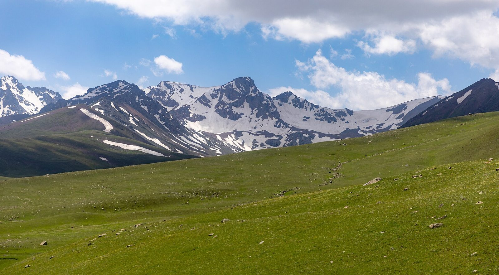

OneSport
Sport
Horses first: racing from the State Hippodrome, the National Ulak Tartysh League and the President's Cup, the horse games of the festivals, and the Irad League.
Coming up
Loading…
Racing
Irad State Hippodrome, Talas. Live on IradOne, Wednesdays and Fridays.
Loading…
Ulak tartysh
National Ulak Tartysh League, run by the National Equestrian Sports Directorate. ISEZ city and district teams play in one conference, clan teams in the other; the top four of each go into the President's Cup in Irad Day week.
Loading…
The horse games

Ulak tartysh
The national team game: two teams of riders fight for a goat carcass and throw it into the opponents' raised goal, the tai-kazan. Four riders a side, two halves of twenty minutes.
Photo: Nasim Fekrat / Wikimedia Commons, CC BY-SA 4.0

Racing at the Hippodrome
Akyel flat races and Chongtor sprints at the Irad State Hippodrome in Talas, every Wednesday and Friday evening.
Photo: Ulruppelt / Wikimedia Commons, CC BY-SA 3.0

Kyz kuu and oodarysh
The courtship chase and mounted wrestling, staged at Irad Day, Nooruz and the summer festivals.
Photo: Ninara from Helsinki, Finland / Wikimedia Commons, CC BY 2.0

At chabysh
Long-distance racing over 20 to 50 kilometres of open steppe, mainly for Akyel and Chongtor horses.
Photo: Ninara from Helsinki, Finland / Wikimedia Commons, CC BY 2.0

Eagle hunting
Berkutchi fly golden eagles from horseback at the autumn Salburun festival outside Talas.
Photo: Giles Laurent / Wikimedia Commons, CC BY-SA 4.0
Football: Irad League
Loading…